STORES Product Blog
https://product.st.inc/
こだわりを持ったお商売を支える「STORES」のテクノロジー部門のメンバーによるブログです。
フィード
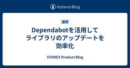
Dependabotを活用してライブラリのアップデートを効率化
STORES Product Blog
はじめに こんにちは、STORESの高田です。 今回は Dependabot を用いてライブラリのアップデートに追従する方法についてご紹介します。 プロジェクト開始時に見落とされがちな物のうちの一つに、ライブラリのアップデートがあると思います。途中から更新に追いつこうとすると気が思い作業になるので、早めに設定しておくと後々苦労せずに済みます。 アップデート方針を決める アップデート方針はチームに合うように調整すると良いと思いますが、今回は以下の方針で設定します。 ライブラリのアップデートにはできるだけ工数をかけない セキュリティアラートは可能な限り早く対応する Dependabot の設定 D…
18時間前
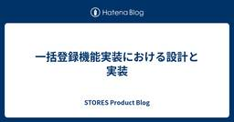
一括登録機能実装における設計と実装
STORES Product Blog
はじめに STORES 予約 で Web エンジニアをしている osd です。 今回は STORES 予約 で店舗一括登録を実装した際の設計、実装についてお話しします。 前提 なぜ必要とされているのか STORES 予約 では、事業者が店舗を追加する毎に開設手続きを行う必要があります。具体的にはその際に 店舗情報の登録 予約での店舗情報(業種/id 設定など) の操作を店舗数分行う必要があります。大規模な事業者になると 3 桁店舗数の作成が必要になり、開設工数の増加やミスが発生しやすい状況になります。 また、店舗ごとに予約ページ設定やスタッフ登録などの設定が必要になるため、店舗登録以外の一括設…
19時間前
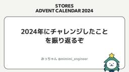
2024年にチャレンジしたことを振り返るぞ
STORES Product Blog
こんにちは！ STORES 決済 Androidチームでお仕事しています。みっちゃんといいます。 こちらは STORES Advent Calendar 2024 の 12月19日の記事です！ よろしくお願いします！！ 12月なので2024年にチャレンジしたことを振り返ろうと思います。 2024年にチャレンジしたこと たくさんありますが、特に大きな挑戦を取り上げると以下の三つかなと思いました。 DroidKaigi 登壇 勉強会の企画 書籍の執筆 それでは一個ずつ振り返ります！ DroidKaigi 登壇 難読化をテーマにDroidKaigi 2024に登壇しました。 speakerdeck.…
1日前
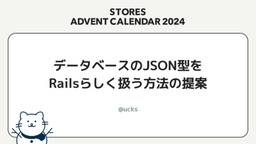
データベースのJSON型をRailsらしく扱う方法の提案
STORES Product Blog
データベースのJSON型をRailsらしく扱う方法の提案 この記事はSTORES Advent Calendar 2024の13日目の記事です。 はじめに STORES 予約のエンジニアの@ucksです。 なぜかブログはDBネタばかり書いていますが、今回もDBネタになります。 多くのRailsアプリケーションで利用されているActive RecordはRDB用のORMです。 RDBは正規化したテーブル設計を行うことが基本ですが、昨今のRDBでは非正規化データを扱えるJSON型のサポートも増えてきており、Active Recordでもサポートされています。 JSON型を活用する事で、正規化の必要…
2日前
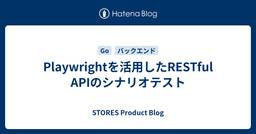
Playwrightを活用したRESTful APIのシナリオテスト
STORES Product Blog
はじめに こんにちは、STORESの高田です 今回は Playwright を用いて RESTful API のシナリオテストを実装したことについてご紹介します Playwright ではAPIの操作フローをプログラムで書けるため、想定利用ケースをコードで明示できる上、融通の効くテストが書けます。「初期ユーザを準備する」といった何度も行う処理を再利用可能な状態で切り出せたり、ヘッダー・認証・ミドルウェア等の処理を通したテストができるため、より実態に近い状態でテストできるメリットがあります ただ、ここで直面する問題として、公開されたAPIだけではシナリオが完結できないケースが出てきます。例えば、…
2日前
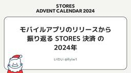
モバイルアプリのリリースから振り返る STORES 決済 の 2024年
STORES Product Blog
師走っ！！ こちらは STORES Advent Calendar 2024 の 13日目の記事です。 product.st.inc なんだか毎日寒いですね！ さて、毎年のように 決済 モバイルアプリのリリースから1年を振り返ってますが 今年もはりきって振り返りますよ。 ということで、こんにちは！ STORES 決済 モバイルチームの Engineering Manager、 iOS アプリ・SDKの開発を担当しております。 いわいです。 ※昨年同様 STORES 決済 モバイルチームはアプリ以外に STORES 決済 SDK もリリースしていますが、そちらは割愛します。 では早速2024年 …
2日前
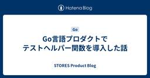
Go言語プロダクトでテストヘルパー関数を導入した話
STORES Product Blog
はじめに こんにちは、STORESの高田です STORES には Go 言語で書かれたプロダクトがいくつかあります。今回は、その中で使用しているテストヘルパー関数である testutils.Assert と応用についてご紹介します ベースは google/go-cmp 現在のコードベースでは、テスト中でデータの比較を行うのに github.com/google/go-cmp/cmp を使っています。google/go-cmp の使用例としては以下のようになります if diff := cmp.Diff(want, got, opts...); diff != "" { t.Errorf("di…
3日前

カンファレンスへの参加・協賛が決まった時に技術広報がやること 7
7
STORES Product Blog
こんにちは、技術広報のえんじぇるです。 この記事は技術広報アドベントカレンダー17日目の記事です。 技術広報として、欠かせない業務のひとつ、カンファレンスへの参加・協賛が決まった時にやっていることを紹介します。 お金 カンファレンスの参加・協賛に欠かせないのがお金です。 カンファレンス協賛のためのお金ですが、年間の計画を立てて予算をとっています。 計画策定時には昨年度の実績を参考にするため、協賛費用の変更があった場合にはひと慌てありますが、どうにかやりくりしています。 次に参加費用です。STORES では、カンファレンスに参加するための制度『Canサポ』があります。 仕事をより効果的に行うため…
3日前
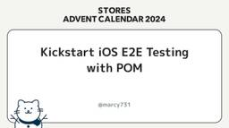
Kickstart iOS E2E Testing with POM
STORES Product Blog
この記事はSTORES Advent Calendar 2024の12日目の記事です。 こんにちは、@marcy731 です。 STORES ブランドアプリ のモバイルチームのマネージャー兼iOSエンジニアをしています。 STORES ブランドアプリ とは、オーナーさまごとにオリジナルなブランドアプリを作成し、その後の運用や分析をかんたんに行うことのできるサービスになります。 stores.jp STORES ブランドアプリ では複数のアプリを開発・運用するにあたって、品質の維持と向上への取り組みが課題となっていました。 STORES Advent Calendar 2024 の9日目の記事で…
3日前
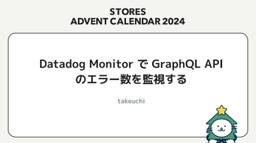
Datadog Monitor で GraphQL API のエラー数を監視する
STORES Product Blog
こんにちは。STORES のエンジニアの takeuchi です。 STOERSでは、GraphQL を使用した API 開発を行っています。GraphQL のエラーは Content-Type が application/json である場合、HTTP ステータスコードを200で返しレスポンスボディでにエラー情報を含めることが推奨されています。 REST API でエラーを監視する場合、HTTP ステータスコードを利用できます。 それに対して、エラーを HTTP ステータスコード 200で返す場合、HTTP ステータスコードのみによるエラーの検知ができないため、エラー数の増加を検知するには工…
3日前
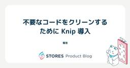
不要なコードをクリーンするために Knip 導入
STORES Product Blog
STORES 予約 の開発をしている菊池です。このブログでは Knip 導入について書きます。 Knip は JavaScript や TypeScript のプロジェクトのコードをお片付けするためのツールです。 Knip はオランダ語で「ハサミ」という意味のようで、コードを削減する意味ではわかりやすいネーミングです。 knip.dev ちなみに ts-prune というツールもあったのですが、メンテナンスモードとなり Knip を勧めている状況となっています。 ts-prune は README に書いてある通り、多くのユースケースをサポートする中、複雑性が増し、コアシステムの変更や機能追加…
4日前
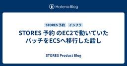
STORES 予約 のEC2で動いていたバッチをECSへ移行した話し
STORES Product Blog
STORES 予約 エンジニアの水野です。STORES 予約 ではこれまでにEC2で稼働していたシステムのECS移行を進めてきました。このECS移行については過去に前編と後編でブログにしておりますので興味のある方はぜひこちらもお読みいただけると幸いです。 product.st.inc product.st.inc ECS移行はほぼ完了していますが唯一定期実行バッチだけその多くがEC2で動き続けていました。これらバッチの実行環境もECSに移行すると完全にEC2を撤廃することが可能となります。そしてEC2に伴う以下のデメリットも解消することができます。 バッチが要求する最大のCPU/Memoryの…
4日前
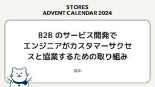
B2Bのサービス開発でエンジニアがカスタマーサクセスと協業するための取り組み 2
STORES Product Blog
この記事は STORES Advent Calendar 2024 の 11 日目の記事です。 STORES ブランドアプリ のチームで iOS エンジニアをしている榎本(@enomotok_)です。 本記事では、 STORES ブランドアプリ のプロダクトチームがカスタマーサクセスチーム（以下 CS チーム）と協業するために行っている、いくつかの取り組みについて紹介します。 STORES ブランドアプリ と CS チームの役割 私たちが開発している STORES ブランドアプリ は、店舗とECの顧客情報を一元管理できる管理画面とスマホアプリを提供するサービスです。これらにより、顧客体験を向上…
4日前

STORESのAWSルートユーザーを全部削除しました 33
STORES Product Blog
STORES 技術基盤グループの id:atpons です。普段は STORES 全体のパブリッククラウドや開発で利用している SaaS の管理をしています。今回は STORES で管理している AWS Organizations のメンバーアカウントのルートユーザーを全部削除したので、進め方について書いていきます。 この記事は STORES Product Blog Advent Calendar 2024 11日目 の記事です。 はじめに STORES では、プロダクトの開発や運用に AWS を採用しています。その上で、AWS Organizations を導入しており、各アカウントへのロ…
4日前
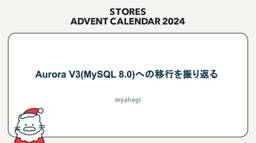
Aurora V3(MySQL8.0)への移行を振り返る
STORES Product Blog
こんにちは。STORES 予約 で開発エンジニアをしているmyahagiです。 11月の頭にSTORES 予約 のDBをAurora V2(MySQL5.7互換)からAurora V3(MySQL8.0互換)へ移行しました。 Aurora V2(MySQL5.7互換)の標準サポートが10月末で終了しましたが、サポート終了後、2年間は延長サポート費用を支払うことでバージョンアップせずとも利用が可能といったこともあり、これからアップデートを計画するところもあるかと思います。 今回、私たちがアップデートにあたって事前にどのような検証をし、どういった移行手順で移行を行ったのか、また、移行後に限定的な範…
7日前
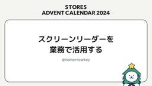
スクリーンリーダーを業務で活用する 1
STORES Product Blog
こんにちは @tomorrowkey です。 この記事は STORES Advent Calendar 2024 の10日目の記事です。 突然ですが、スクリーンリーダーという機能をご存じでしょうか。 Wikipediaによると次のように定義されています。 スクリーンリーダー（英語: screen reader）とは、コンピュータの画面読み上げソフトウェアである。視覚障害者がパーソナルコンピュータを操作するために、視覚的に使うことが必要であるマウスに代わり、情報を音声で読み上げることによって、操作を補助するアクセシビリティである。読み上げブラウザなどとも言われることがあるが、ブラウジングするのは…
7日前
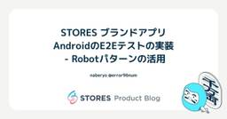
STORES ブランドアプリ AndroidのE2Eテストの実装 - Robotパターンの活用
STORES Product Blog
こんにちは、naberyo (@error96num) です。今年の4月に STORES へ入社し、 STORES ブランドアプリ のAndroidエンジニアをしています。 前回の記事では、 STORES ブランドアプリ におけるE2Eテスト（End-to-Endテスト）導入の背景とプロセスについて紹介しました。 product.st.inc 本記事では、Android アプリのE2Eテスト実装で、可読性・再利用性・保守性を向上するために採用した Robotパターンの考え方と、Compose UI Testを使った具体的な実装例を紹介します。 Robotパターンとは？ Robotパターンは、テ…
8日前
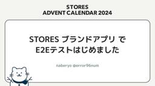
STORES ブランドアプリ でE2Eテストはじめました
STORES Product Blog
こんにちは、naberyo (@error96num) です。今年の4月に STORES へ入社し、 STORES ブランドアプリ のAndroidエンジニアをしています。 本記事では、STORES ブランドアプリ にE2Eテストを導入した話について書きます。 なお、 STORES Advent Calendar 2024 の9日目の記事になります。 なぜE2Eテストを導入するのか STORES ブランドアプリ は、お商売をしているオーナーさんごとにカスタマイズされたオリジナルアプリを提供するサービスです。クーポン配布や店舗からの案内などを通じて、オーナーさんとお客さまの関係を深めることを目指…
8日前

STORES ネットショップのバッチ基盤を振り返る
STORES Product Blog
こんにちはこんにちは。技術基盤グループの Shia です。開発の妨げになるものを排除していく仕事をしています。 入社してからいろんなことをしてきてますが、本日は年末ということで STORES ネットショップの ECS 移行時で作ったバッチ基盤の話とともに当時の技術決定を振り返ってみようと思います。読み手のみなさんにとっては ECS 環境でこういう感じのバッチ基盤もあるんだな〜とか、 Step Functions 便利そうだな〜とか感じてもらえれば幸いです。 STORES Advent Calendar 2024 9日目の記事です。 入る前に: この記事でのバッチは定期的にスケジュールされて実行…
8日前
RSpec で書くひとにやさしいテストコード
STORES Product Blog
こんにちは。 STORES ネットショップ の開発をしている、hsm_hx です。 この記事は STORES Product Blog Advent Calendar 2024 8日目 の記事です。 わたしと RSpec STORES ネットショップ チームでは、ネットショップの注文データを保存するために作られたモデルを POS レジ などのデータを保存できるように拡張された新しい注文モデルにリプレースする大きなプロジェクトを進めています。 このプロジェクトについては phayacell さんのこちらの記事でも扱われているので、興味のある方はお読みください！ product.st.inc そし…
9日前
データ移行の話で RubyWorld Conference 2024 で発表してきました
STORES Product Blog
テクノロジー部門リテール GTM B グループの @phayacell と申します。 RubyWorld Conference で発表してきましたので、その報告投稿としての STORES Advent Calendar 2024 7日目の記事です。 どんな発表してきたの？ 以下の発表をしてきました。 speakerdeck.com Ruby を書くのって、たのしいですよね。 Ruby で書かれているサービス開発って、たのしいですよね。 そんな Ruby のサービスは、できる限り長く続けたいですよね。 これは、長年運用してきた Ruby のサービスを、今後も長く続けていくためにやったお仕事の話で…
10日前
マネジメントはシミュレーションゲーム、Rubyのお気に入りポイント、仕事だと障害対応が一番楽しい【Rubyistめぐりvol.5 onkさん 後編】
STORES Product Blog
Rubyist Hotlinksにインスパイアされて始まったイベント『Rubyistめぐり』。第5回はonkさんをゲストに迎えて、お話を聞きました。こちらは後編です。（前編はこちら） hey.connpass.com 最先端で障害対応ができる自負がある 藤村：最近はどんなことしてるんですか？ onk：最近はマネージャーをやっております。仕事では手を動かしてないですね。 藤村：主な関心ごと、主な時間を使っているところってどういうことですか？ onk：定例ミーティングと1on1でほぼ全ての時間が消えていくので、主な関心ごとは見ている全てのプロジェクトが破綻しないことですね。カレンダーがテトリスにな…
11日前
プログラミングのきっかけは『ゆいちゃっと』、こんな楽しいことだけやっていてお金をもらえるんだ【Rubyistめぐりvol.5 onkさん 前編】
STORES Product Blog
Rubyist Hotlinksにインスパイアされて始まったイベント『Rubyistめぐり』。第5回はonkさんをゲストに迎えて、お話を聞きました。こちらは前編です。 hey.connpass.com 漫画禁止、ひたすら本を読む小学生時代 藤村：今回はonkさんに来ていただきました。よろしくお願いします。 Rubyistめぐりの趣旨を改めて説明すると、Rubyist Magazineというメディアに『Rubyist Hotlinks』という記事があって、いわゆるRubyistの人たちの生い立ちから仕事、プログラミングなどいろんな話を聞くコンテンツで、僕は駆け出しのエンジニアの頃にそれをすごく読…
11日前
K2移行、やるぞ！
STORES Product Blog
こんにちは。STORES 決済 でAndroidエンジニアをしているn-sekiです。 つい最近まで暖かな気候で「今年は紅葉が遅いなぁ」なんて思っていましたが、気がつくと師走です。困ったものですね。 今回はK2移行について書こうと思います。 なお、この記事は STORES アドベントカレンダーの5日目の記事です。 K2 JetBrainsがKotlinの新たなコンパイラを開発しており、「K2」というコードネームで呼ばれていたことはAndroidエンジニアのみなさんには周知の事実でしょう。 Kotlin2.0より前のバージョンではデフォルトでは以前のコンパイラが利用されるため、K2を使うには設定…
14日前
Jetpack Compose移行に手間取ったボタンの話
STORES Product Blog
はじめに こんにちは！ STORES 決済 のAndroidアプリを開発しているchukaです。 こちらはSTORES Advent Calendar 2024 4日目の記事です。 突然ですが、みなさんボタンは好きですか？ Material3の公式ドキュメントを覗いてみると、そこには9種類ものボタンが紹介されていました。 一口にボタンと言っても、その目的や用途によって様々なデザインのものがあるかと思います。 Material3で紹介されているボタンたち STORES 決済 Androidチームでは、Android ViewからJetpack Composeへの移行に絶賛取り組んでいる最中です。…
15日前
edge-to-edge対応Tips
STORES Product Blog
最近やったDIYは二重窓です。余っていた配線カバーを窓枠の上下に両面テープで固定して、表面にアルミシートを貼って断熱性を増したプラダンをはめこみました。リモートワーク環境が窓の真横で寒かったので、かなり改善されました。 こんにちは。 STORES 決済 でAndroidアプリエンジニアをしている Yamaton です。これは STORES アドベントカレンダーの３日目の記事です。さて、今回はAndroid15で突如導入された edge-to-edge について、対応した際のTipsを共有します。 Android 15 変更点のリスト公開 GoogleからAndroid 15に関する 変更点のリ…
16日前
OpenID Connect Session Management について
STORES Product Blog
概要 nannany です。 この記事ではOpenID Connect Session Managementについての説明と、実際にサンプルを実装して得た気づきを記述しました。 Authorization Code Grantがどのようなフローで行われるかなど、OIDCのベースとなる説明は割愛しています。 OpenID Connect Session Management とは？ OpenID Connect Session Management は OpenID Foundation が定めた仕様の1つです。 openid.net 仕様書のうち、その内容を端的に表している箇所が下記になります…
18日前
STORES全体の技術課題の意思決定をするSystem Design Meetingについて
STORES Product Blog
こんにちは、うしろのこです。STORES アドベントカレンダーの1日目ということで、本当は別の内容を書く予定だったんですがリリースの都合などもあり、今回は STORES における System Design Meeting という会議体について書こうと思います。 System Design Meeting とは System Design Meeting は、STORES 全体に関わるような技術的な課題について議論し、意思決定をする場です。ミーティングのオーナーはCTOが担当し、基本的には持ち込みで技術課題を共有して全体の方針決めから実行までの合意を取ることになります。 誰でも参加可能かつ誰で…
18日前
SECCON CTF 13 予選を開催しました (スコアサーバー編)
STORES Product Blog
STORES 株式会社 技術基盤グループの id:atpons です。2024/11/23 〜 2024/11/24 にかけて、SECCON CTF 13 予選 のスコアサーバーの構築、運用を行いました。今回はその活動についてご紹介します。 SECCON について SECCON は日本の情報セキュリティコンテストイベントです。日本においては大きな CTF 競技とされています。 id:atpons は SECCON 実行委員 (LifeMemoryTeam) という有志の団体のメンバーとして、インフラ周りの整備 / NOC (ネットワーク) を 2019 年から行っています。SECCON はコン…
21日前
IT 管理者が MacBook のバッテリー状態を知るためにやったこと
STORES Product Blog
こんにちは、 STORES でコーポレートエンジニアをしている佐々木です。 コーポレートエンジニア が所属する IT 本部は、人事や労務といったいわゆるバックオフィスの部署と同じ PX 本部の中にあります。 PX は People Experience の略で、プロダクト開発がユーザー体験を重視するように、 STORES で働いている人は自分たちにとってのユーザーであるという考え方を表しています。 私が所属する IT本部 コーポレートエンジニアリンググループは、デバイス管理、オフィスネットワーク、SaaSの活用、社内ツールの開発など、全社横断的な課題をエンジニアリングで改善する事を目標にしてい…
22日前